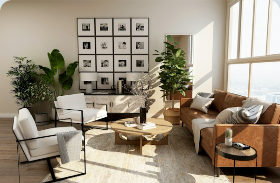
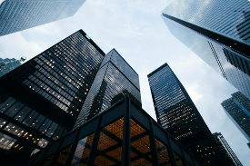
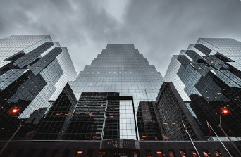

Principais tipos de construções modernas

Casas modernas
Possuem designs diferentes, ambientes integrados, grandes janelas e aproveitamento da luz natural. Muitas utilizam energia solar e sistemas inteligentes.

Prédios inteligentes
São edifícios que utilizam sistemas tecnológicos para controlar iluminação, temperatura, elevadores e segurança.

Construções sustentáveis
São feitas pensando no meio ambiente. Podem utilizar materiais recicláveis, energia solar e sistemas para economizar água.

Construções tecnológicas
Utilizam máquinas modernas, impressoras 3D e programas de computador para facilitar os projetos e as obras.

Pontes modernas
São projetadas para suportar grandes pesos e facilitar o transporte de pessoas e veículos, utilizando materiais resistentes e técnicas avançadas.

Escolas e hospitais
Possuem espaços planejados para oferecer mais conforto, acessibilidade, iluminação e segurança para as pessoas.